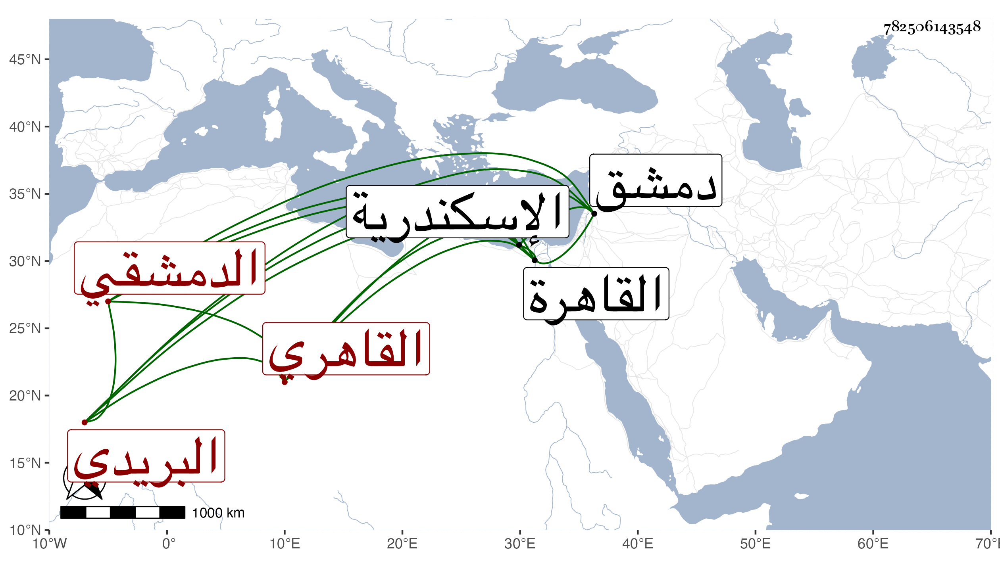

0902Sakhawi.DawLamic.ITO20230111-ara1.EIS1600.782506143548
Biography ID: 782506143548
480
أحمد بن محمد بن محمد بن إبراهيم بن محمد الشهاب بن ناصر الدين بن النجم الدمشقي الأصل القاهري البريدي ويعرف بابن الشهيد . ولد سنة خمس وثمانين وسبعمائة بالقاهرة ونشأ بها فقرأ القرآن والعمدة وسمع الصحيح ومسند الشافعي وغيرهما على ابن المجد وكذا سمع على التنوخي والعراقي والهيثمي والمطرز والحلاوي والسويداوي وآخرين أجاز لي وكان أبوه بريديا فسافر معه إلى دمشق والاسكندرية في اشتغال الملوك وخلفه في اسم البريدية وتنزيله في ديوان الأجناد السلطانية إلى أن مات في سنة ثلاث وخمسين وكأن فتح الدين محمد بن إبراهيم بن محمد ناظم السيرة عم والده فيحرر .
